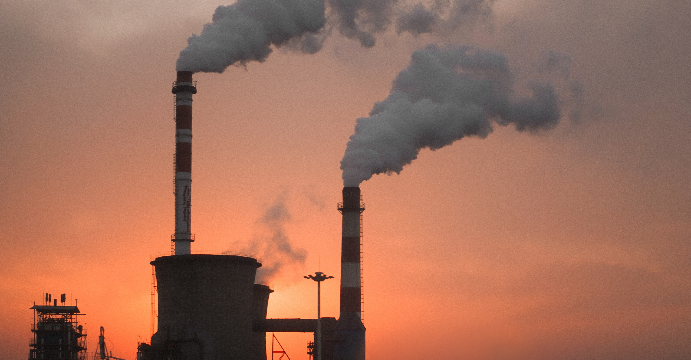
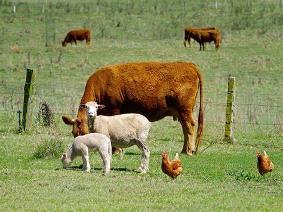
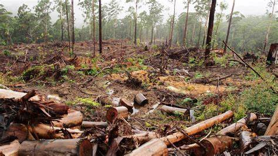

Climate Change
Introduction
Climate change is the rapid and drastic change in the environment. It is currently causing many issues worldwide and is becoming harder and harder to stop. Below are the causes and effects of climate change, and how it has destroyed both natural ecosystems and is starting to destroy humanity as well.
Causes
The main driving force behind climate change is the emission of greenhouse gases. These gases trap the sun's heat within the Earth's atmosphere, causing the planet to get hotter. Listed below are the largest sources of these greenhouse gases.
-
Industrial Sources
This refers to large-scale industries such as manufacturing and construction. Industrial sources account for over 12.4% of greenhouse gas emissions.
-
Resource Extraction
This refers to the extraction of raw materials, such as mining and logging. Extracting resources accounts for over 6% of greenhouse gas emissions.
-
Agriculture
This refers to the greenhouse gases released by farming crops as well as from livestock kept on farms. Agricultural sources account for 11% of greenhouse gas emissions.
-
Natural Sources
Various natural and biological sources can also produce greenhouse gases. These include, but are not limited to volcanic eruptions, fires, and animals.
Below is a chart that shows greenhouse gas emissions, with sources being listed along with the percentage of the gases released. Note that this data is exclusive to the United States.

Effects
The consequences of climate change are far-reaching. Below are just some of the effects that are posing real problems.
-
Rising Sea Levels
Due to rising temperatures, the world's ice caps and glaciers are starting to melt, slowly making the water level rise. Low elevation countries such as the Netherlands, as well as island nations like the Solomon Islands and the Maldives are at risk of sinking into the ocean. Large metropolis cities like Jakarta, Indonesia (Population: 13.7 million people), London, United Kingdom (Population: 10.5 million people), and Dhaka, Bangladesh (Population: 31.2 million people) are already sinking up to ten times as fast compared to the global average.
-
Extreme Weather Conditions
Weather phenomena such as tornadoes, typhoons, and flash floods are becoming more commonplace. Because of global warming, the ocean's temperature is also rising. This creates the perfect environment for powerful storms to grow larger and larger, which cause billions of dollars in damages every year.
Documentation & Further Reading
The United Nations' Article
National Geographic's Article
NASA's Article
Images & Videos
Factory byproducts pollute land, air, and water
Agricultural livestock produce lots of greenhouse gases like methane
Activities such as logging and mining both worsen climate change and make it harder to reverse its effects
The European Forest Institute's video about illegal logging